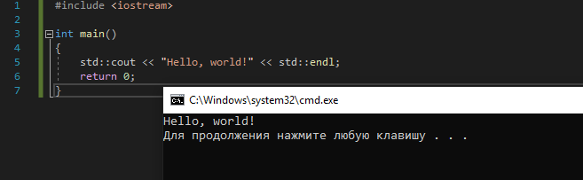
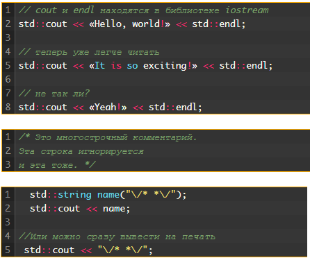
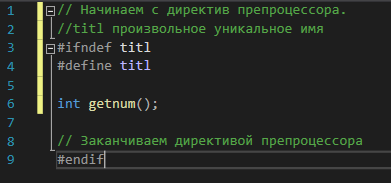
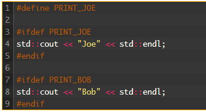
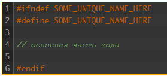
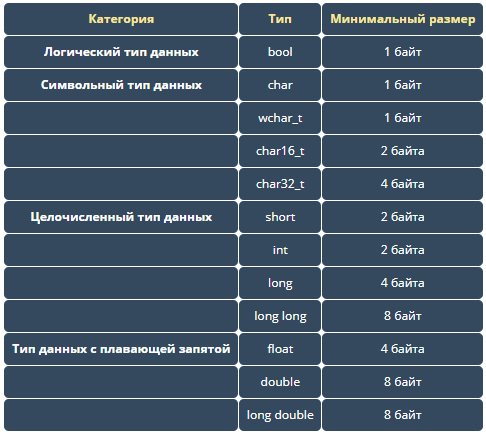
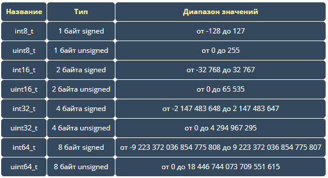

Интерфейс приглянулся, для личного пользования удобнее не придумать. Попробую продоолжить то, что не смоглось десять лет назад.
База конспектов.Оглавление.
- Подготовка.
- Первая практика.
- Комментарии.
- Ввод-вывод.
- Функции.
- Области видимости.
- Структура проектов.
- Директивы.
- Переменные, типы.
- Базовые конструкты.
- Продвинутые конструкты.
- Логические операции.
- 5
- 5
- 5
Глава 1. Подготовка.
Много лет назад я потерял интерес к этому. Но остановился именно на этой стадии. Может, именно отсюда и стоит продолжать прерванный путь. Итак, Си плюс плюс.
Microsoft Visual C++ 2019. Скачал здесь.
Столкнулся со сложностью пользования своим же конспектом. Необходимо разделить материал по категориям. Простейшая программа, типы данных, ввод-вывод, функции как основа ооп. Простейшие конструкции типа циклов, ветвлений. Ide, структурное представление проекта, директивы, хедеры. Взаимодействие с файловой системой, интерфейсы.
Глава 2. Первая практика.
Есть ряд причин, по которым полное конспектирование стало неконструктивно. Например разбор интерфейса, уже через полгода актуальные среды разработки могут кардинально измениться, и придётся напрягать интуицию, сверяясь с мануалом. Чем больше сроки, тем эффектнее это шоу экстрасенсов.
Процесс установки IDE и создания проекта не вызвал трудностей при следовании мануалу указанного источника для обучения. Поэтому я не стану просто копировать туда-сюда. В дальнейшем здесь буду собирать только синтаксис и важные комментарии с фрагментами кода.
Глава 3. Комментарии.
Однострочные комментарии, многострочные комментарии, способ вывода слеша на печать. Есть ещё эстетика комметирования, например содержимое на разных уровнях, размещение, оформление звёздочкой на каждой строке. И практическое применение, например упаковка кода на время.
Глава 4. Ввод-вывод.
std::cout -- это объект, находящийся в библиотеке iostream и выводящий на консоль получаемые данные. Далее пишется << и после ставится либо переменная, либо. Строковые константы, как мне привычно их вспоминать, выделяются "кавычками". Можно для одного объекта повторять << несколько раз, в паскале вроде аналогом было простое использование запятой -- a, b,' privet ', c, d.
std::endl тоже объект, его можно передавать в std::cout для перевода строки.
std::cin объект, забирающий значение от пользователя. используется скобка в другую сторону. std::cin >> var;
std::cin >> x1 >> x2 >> x3; работает непредсказуемо. Но определено с символьными переменными. Если ввести с терминала набор символов, то три первых введённых распределятся. Вроде для целочисленных просто случится дублирование, то бишь введённое число станет х1==х2 и х1==х3.
std::cout << "123 \t";. Знак \т применяет табуляцию.
Для очищения консоли нужна библиотека stdlib.h и стейтмент system("CLS").
Для русского вывода в консоль нужна библиотека clocale и вот это setlocale(LC_CTYPE, "rus").
Если раздражает завершающая фраза «…завершает работу с кодом 0…», в параметрах отладки сделать "Автоматически закрыть консоль при остановке отладки".
Глава 5. Функции.
Главная функция int main() {} выглядит именно так. Так примерно выглядит минимально возможная псевдорабочая программа. Наверное. Если статмент return 0; не является обязательным.
Для аналога процедуры, то бишь не возвращающей значения функции, можно перед майн создать void func1() {}, войд означает пустоту возврата. Типы функции верятно совпадают с типами переменных, и определяют тип значения, которое будет передано через return. int func02() например для целочисленных. Возвратить можно только одно значение. Если возврат произведён, функция завершает работу. Имя функции не может совпадать с зарезервированными стандартными именами.
Функция обычно создаётся с параметрами, перечисляющимися в скобках с их типом. При вызове функции они сразу инициализируются агрументами, сообщаемыми из caller'а. Имена параметров существуют только внутри функции. Хотя возможно переопределение при существовании глобальной переменной с таким же именем, нужно подробнее будет изучить пространство объявлений имён.
int sum01(int a, int b) { return a + b; } Так выглядит функция, складывающая два аргумента и возвращающая результат. Вызов можно делать любыми r-value -- sum(x,5); Вызывать можно только с тем набором аргументов, который по типам и количеству и порядку типов совпадает с существующим. Любимая тема -- перегрузка функции. Использование одного имени для разных функций, возможное за счёт уникализации (не уверен, но слово красивое) набором параметром. Если есть func01(int a, double b), то вызов с атрибутами func01(0.25,5) должен привести к ошибке. Но если существует ещё одна функция с обратным порядком типов, то всё будет вызвана именно она и всё хорошо.
Объявить функцию внутри другой есть ошибка. Только друг за дружкой.
Вариант. Создать общую функцию int getNum() для ввода числа пользователем, а в основной программе вызывать её в формате r-value как инициализацию создаваемых переменных.
Интересный пример ошибки, войд функция с печатью строки. Если эту функцию вызвать через std::cout, произойдёт ошибка, потому что функция сама занимается печатью, а вывести значение не может.
Прототип функции, то бишь предварительное её объявление необходимо, если существуют две функции, вызывающие друг друга. Первая не будет знать про вторую. Оптимальный вариант просто скопировать строку определения функции и поставить точку с запятой, разместить это перед функцией, которая будет использовать другую раньше её определения. Другим решением проблемы будет использование заголовочного файла, глава 7.
Глава 6. Области видимости.
Продолжительность имеет схожее значение с областью, только хронологически. По завершении блока переменные из него уничтожаются. Определённые внутри блока переменные видны и живут только в этом блоке.
Переменные или параметры без указания особых областей являются локальными или блочными. Даже в функции майн переменные не распространяются на другие вызываемые функции. Поэтому можно создать функцию с параметрами а,б и передать ей атрибуты из а,б, конфликта не возникнет. Называется сокрытием имён. При завершении работы функциии или блока переменные стираются. Сам блок выглядит так { 123 разных операторов }.
Вложенные блоки являются частью внешней области, поэтому наследуют переменные извне.
Директивы работают только в пределах файла. Это сложно, разбор позже.
Глобальные переменные. Работают внутри файла, хотя по умолчанию имеют внешнюю связь и могут экстерналиться. Создаются обычно, но расположены между инклюдами и блоками функций. Могут быть сокрыты блочными переменными, но через оператор разрешения видимости можно определить доступ. x = 5; ::x = 10. Для удобства стоит ставить префикс g_x.
Глобальные переменные можно использовать в других файлах, но нужно предварительное объявление без инициализации, с использованием слова extern. В первичном определении слово не нужно.
Использование static для создания глобальных переменных запрещает их экстерналить в других файлах.
Глобальные константы по умолчанию внутренние, для файла. Прописывать экстерн нужно и при первичной инициализации, и при предварительном объявлении в другой файл. Предварительные объявления можно кучковать в отдельном заголовнике, в пространства имён. Namespace нужно делать и для первичного и для предварительного.
Для локальных переменных static имеет другое значение. Он запрещает уничтожение после завершения блока. Повторное объявление будет проигнорировано, а повторные операторы произведут действие для сохранившегося значения. Вероятно переменная защищена от изменения вне этого блока, поскольку определена локально. Стало быть, это полезно только для повторяющихся циклов без явной системы.
Глава 7. Структурное представление.
Файлы проекта. Компилятор читает внешние файлы .срр только если они присоединены к проекту через интерфейс компилятора. Для использования указанных там функций в основном файле достаточно просто предварительного их объявления без внедрения как части кода. При наличии функций ввода вывода требуется подключать библиотеку в данных файлах. Вероятно потому что компилятор пытается каждый файл превратить в рабочий модуль.
Заголовочный файл с именем file.h, то бишь данным расширением, тоже подключается в компиляторе. Его суть просто перечислить объявления для пачки функций из включённых в проект файлов. Хотя эстетически лучшше ассоциировать заголовочный файл для одного файла с функциями. Используя #include "file.h" (кавычки для собственных хедфайлов, углы для системных директорий) в начале программы, мы попросим компилятор включить как часть кода все указанные там объявления. Практически можно одним заголовочным файлом объявить функции с разных файлов всего проекта, таким образом решив проблему преждевременного использования неопределённой функции. На картинке хедгвард, он запрещает чтение кода, если прописанный внутри идентификатор был использован ранее. Например при каскадном инклюде может произойти дублирование объявлений, что приводит к ошибке.
Также заголовочные файлы используются для создания области имён и списка в неё констант.
Область имён namespase01 { ... id01 }. Используется для разрешения случаев с конфликтом имён, хотя для чего вообще создавать конфликт имён, пока неясно. Можно создать два разных пространства с одной функцией, тогда доступ к этой функции будет через имя_пр::функция. Также можно создать два пространства с одним именем, они будут как одно, и уже в его пределах не стоит дублировать имя функции или переменной. Примерный ответ по конфликтам. Может выйти новая спецификация языка, и личный набор имён начнёт конфликтовать. Это решение превентивно устраняет проблему.
Пространства могут быть вложенными, namespace nm1 { namespace nm2 {int x;} }. Тогда доступ к х будет через nm1::nm2::x. Псевдоним создаётся так. namespace nm3 = nm1::nm2; Не очень хочется вообще запоминать такие структуры, ибо при использовании предварительных объявлений их придётся дублировать.
Using имеет область видимости, глобальную или блочную. Определяет конкретный источник для используемого идентификатора. using std::cout; будет вытаскивать cout только из std пространства. using namespace std; более широкая альтернатива, она выгрузит сразу все имена, увеличив вероятность конфликта. Тем более если использовать using в глобальной зоне. Отменить или заменить юзинг нельзя, в пределах видимости, поэтому либо ограничивать блоками, либо просто использовать оператор разрешения::.
Перечислить заголовочные файлы и содержимое.
iostream для ввода-вывода. cmath для математики, pow например. fabs(a-b). bitset для использования битовых флагов. stdlib.h для клирскрина. clocale для варианта русской консоли. iomanip для переопределения точности соут. string для пользования строками.
Глава 8. Директивы.
#include включает код из указанной директории частью текущего.
#define identifier макрос объект, удаляет все найденные слова.
#define identifier substitution_text подменяет найденный текст на указанный.
Условная компиляция выделяет фрагмент кода, который может быть выполнен или не выполнен в зависимости от присутствия дирекктивы #define identif. #ifdef или #ifndef с указанием нужного идентификатора, они работают противоположным способом, проверяют наличие #define и код до директивы #endif будет либо выполнен, либо нет.
В приведённом коде определяется принтджо, и выполняется первый из вариантов.
Директивы работают только внутри одного файла. Размещение с другими конструкциями не играет роли.
Немного сложная тема, но надо обозначить. Header guard. Для защиты от ошибок компиляции при дублировании определений. Например, заголовочный файл содержит определение функции, и другой заголочный файл включает предыдущий. И зачем-то в основном файле нужно включать их оба, что наверняка приведёт к ошибке. Тогда можно использовать такую конструкцию директив.
Обычно для имени используется имя файла с окончанием _H, NAME01_H. И вот примерное пояснение. Вставленный код будет помечен идентификатором, и дублированная его вставка встретит этот код с директивой на игнорирование.
Заменить эту конструкцию можно директивой #pragma once, хотя теоретически есть компиляторы, не поддерживающие её.
Глава 9. Переменновые и типки.
Инициализация есть создание переменной с одновременным присваиванием. Копирующая инициализация осуществляется со знаком равно. int X = 5;. Ещё есть прямая инициализация, она делается скобками. int x(5);. С разными типами данных они могут работать немного лучше, например эээ хмм.
Некое С++11 позволяет юниформ инициализацию, int x{5};. Пустыми скобками сразу присвоится значение по умолчанию, здесь ноль. Преимущества юниформ в защите от некорректно присваиваемых типов данных, выдаст ошибку.
Пачкующая инициализация int a=3,b=4 ; double x,y; char l{=}, k="%";. Разные типы отделяются точкой запятой. Дублировать указание типа для переменных одного типа тоже неправильно.
Унарная функция sizeof(int) возвращает в байтах размер типа инт. Также работает с переменными.
Signed int означает, что первый бит байта отвечает за знак. Поэтому этот способ указания типа допускает отрицательные числа с половинным модулем, например для 1Б (-127,128). Unsigned int будет означать обратное (0,255). Целочисленные типы по умолчанию со знаком, но некоторые можно переопределять. Рекомендуется использовать сигнед, как по умолчанию.
Оверфлоу переполнение. Для примера с четырьмя битами. Число 21 занимает 5 бит (10101). 4 бита справа (0101) поместятся в переменную, а крайний левый бит (1) просто потеряется. Т.е. наша переменная будет содержать 0101, что равно 101 (нуль спереди не считается), а это уже число 5, а не 21.
Перечислить все типы.
Целочки фиксированные. Инклюдятся через cstdint, это при поддержке с++11. До этого их можно было использовать с подключением stdint.h. Некий файл pstdint.h размещён в обучающем ресурсе, сохраню в проект. Пространство стд пока не совсем понятно, но вот его как надо: std::int16_t i(5);.
std::int8_t и std::uint8_t могут печатать значения в виде символов, избегать их применения.
Дробные.
Дробные нужно указывать сразу с точкой, хотя я не уверен -- double d(5.0); Флотные значения должны помечаться буквой, хотя я не уверен -- float f(5.0f);.
Экспоненциальная запись. 1,5е5 означает 1,5 х 10 в пятой степени. 1,5 мантисса, 5 экспонент, может быть представлен как 05. Получается 150000, не дробное в принципе число. Или например 2е-2 означает 0,02. Присваивать можно значения в обеих формах. Цифры в мантиссе называются значимыми цифрами. При выводе значения через соут остаётся шесть значимых чисел. Например 1,234567 при выводе напишет 1,23456. Может ещё написать в экспоненциальном виде при необходимости. 12345678,9 должен вывести как 1,23456е07.
Заголовочный include iomanip содержит функцию переопределения точности соут. std::cout << std::setprecision(10);. Теперь 1,234567891 выведется полностью.
inf -inf nan(ind) спецчисла для некорректных явлений вроде бесконечности.
Логические.
Логические переменные или константы на выводе пердставляют собой 1 или 0. Чтобы соут транслировал словами, можно переопределить режим. std::cout << std::boolalpha;. А как обратно.
Логические конструкции работают со значениями нулевыми или ненулевыми. if (выражение) стейтмент1 else стетмент2. Выражение может быть представлено логическими константами, переменными, или чем угодно другим, и при любом ненулевом и истинном значении выполнится действие первое. Проверка, логическое сложение ненулевых констант возвращает 1.
Символьные.
Символ аскии. Одинарные кавычки. а=='97'. Вывод символьных переменных производит символ. Через присвоение значения целочисленным переменным можно вывести код символа, но рекомендуется использовать std::cout << static_cast
Суффиксы, литералы. Для определения некоторых типов нужно к значению поставить суффикс. Для разных типов он есть, например u для ансигнед, или L для лонг, но нет особого смысла их использовать. Для float x=1,5f ещё может быть, хотя непонятно зачем нужно определять тип словом float. Литералы восьми и шестнадцатеричной системы через копирующее присваивание, int x=010 будет определён как 8, int x=0x10 вероятно как 16. Представление шестнадцатеричной системы удобно для записи бинарного вида. 0x01 = 00000001, 0x10 = 00010000, 0xFF = 11111111. Бинарный литерал тоже есть в с++14, int x = 0b100 = 00000100. При выводе соутом должно выводиться в стандартной десятичной системе.
В с++14 числа можно разделять одиночной кавычкой без потери смысла значения. int x=1'234'567;
Константы и магия.
Константы не совсем переменные. Но напишу в этой же главе. С помощью использования const int x{} можно определить следуюшую переменную как константу, но обязательно нужно на этом этапе сразу задать ей значение, либо инициализировать значением другой переменной, либо литеральной константой. В этом плане константы делятся на два типа. Время компиляции - это для инициализации неизменяемой переменной на стадии написания кода. Время выполения - это для переменных, которые будут введены во время работы программы. Для первого типа, то бишь абсолютно неизменяемого значения с момента заготовки кода, предполагается существование особого спецификатора constexpr int x={zn01}. Использовать его необязательно, как и много другой теоретической лабуды, достаточно знать о нём. Наиболее полезно использовать константы как параметр функции, чтобы гарантировать его неизменность.
Случаи, когда почему-то нельзя использовать переменную, но нужно будет изменить значение. Например x = x + 10;, Здесь 10 называется магическим числом, наверное столько лет было автору, когда он смотрел гарри поттера. В программе может обнаружиться несколько таких значений, связанных и могущих быть изменёнными. Тогда прописываем их идентификатором, а в заголовочной области напишем директиву препроцессора, макрос объест на замену. #define ID01 15 здесь макрос будет искать все айди01 и менять на 15. При редктировании кода можно будет переопределить разом все такие литеральные константы. Способ лучше ограничить в применении.
Преобразование.
Преобразование типов. Неявное случается иногда, когда комплилятор получает разные типы и сам решает, что делать. Явное контролируется вручную. c-style cast выглядит так. char a='a'; int x=(char)a; int x1=char(a); тут два вида, но делают одно и то же. Такой способ рекомендуется избегать, потому что он не проверяет возможные ошибки совместимости. Вообще символ сам нормально присваивается как число, но при операциях деления сложнее, там может произойти целочисленное, когда нужно дробное.
int a{5}, b{2}; double c = a/b. Здесь с равно 2, потому что деление двух инт производит целочисленную операцию. Один из вариантов: с= 1,0 * a/b. Такой вариант по слухам не всегда помогает. Основной универсальный способ - static_cast.
std::cout << static_cast
Строки.
Работа со строками. Подключаем string библиотеку. Создаём переменную std::string{"123"}. Использовать соут можно, а с син возникают моменты. Он создаёт буфер фрагментов, разделяемых пробелом. Если вызывать его пять раз, но в консоли ввести пять чисел сразу, то следующие четыре вызова будут произведены без участия лишнего ввода с консоли. Со строками то же самое. Если первый вызов с консоли наполнить двумя словами, то строковая переменная получит первое слово, а второе будет отдано на втором вызове.
std::getline(std::cin, myName); полностью извлекает буфер. Возникает ещё проблема, если чередовать син для ввода чисел и строк. После числа захватывается знак перевода строки, и первая строковая переменная получит его. std::cin.ignore(32767, '\n'); // удаляем символ новой строки из входного потока данных. Ставить эту строку на границе после использования чисел. Длина строки int x=string1.length();
Перечисления.
Вроде пользовательского типа данных. enum Colors {YEL, BLC, RED,}; Используется как объявление типа для новых переменных. Colors x{RED}; По умолчанию они нумеруются с нуля. Внутри структуры можно присваивать свои значения порядка, даже отрицательные. И не обязательно всем, тогда следующее будет на 1 больше. Значения тут числовые, как для вывода идут числами. Но создавать переменную с указанием номера нельзя, без использования явного преобразователя, Colors color1 = static_cast
Сравнение двух переменных разных порядковых типов приведёт к сравнению их индексов. Это нелогично, и был придуман способ, чтобы комплилятор защищал программиста от идиотизма.
enum class Fruits {LEMON, KIWI}; класс ограничивает перечислители внутри перечисления. Если теперь сделать Fruits fruit = Fruits::LEMON; и сравнить с аналогичной переменной другого типа, компилятор выдаст ошибку. Сравнение переменных внутри одного класса остаётся доступным. Неявное конвертирование перестанет работать, но явное через статик_каст доступно.
Псевдоним.
typedef int somedata_t; позволяет назначать псевдоним для типов переменных. Читабельность кода, и например сделать ряд переменных определённого типа, который вдруг зачем-то надо будет поменять. Случается и длинный комбинированный тип, который полезно записать короче. using somedata_t = double; иное написание, доступное с С++11.
typedef имеет контекст и не конфликтует с другими именами в коде. Например typedef int a; a a = 1; — вполне корректная запись, хоть и извращенная. В объявлении переменной первый идентификатор является ее типом, а второй — именем. Используя макросы, мы бы переписали и тип переменной, и ее имя, что завершилось бы ошибкой компиляции. Разумеется, подобное использовать не стоит, я просто попытался показать, что typedef дает больше возможностей. Другой пример — ты можешь использовать в разных пространствах имен одно и то же имя для псевдонима разных типов, более точно отображая смысл своего кода.
Авто тип.
auto x = 3.0; авто когда-то явно определял переменную автоматической продолжительности. Но поскольку это было организовано по умолчанию, значение авто изменили для задания типа к моменту инициализации. Без инициализации использовать авто нельзя. Примеры использования. Тип функции, или переменная, принимающая результат из функции. Использование рекомендовано ограничить. В C++11 появилась возможность использовать синтаксис типа возвращаемого значения trailing (или просто «синтаксис trailing»), когда компилятор делает выводы о типе возвращаемого значения по конечной части прототипа функции. auto subtract(int a, int b) -> int;
Глава 10. Базовые конструкции.
x = (условие) ? значение1 : значение2;
Удобно использовать как инициализацию констант, потому что этот оператор возвращает значение, не вынуждая дублировать код.
Структура. struct Student { short id; int age; } ; Student john = { 5 , 25 } ; Student will { 10, 15 } ;
x = john.id + will.age;
Также можно задавать значения по умолчанию для полей структуры, но при с++11 отключается uniform способ инициализации переменных. В с++14 это исправлено. Особенность структур в том, что их можно передавать аргументом функции, и возвращать. Структуры могут вкладываться. Поскольку память не выделяется при объявлении, предварительное объявление не работает, но можно инклюдить базовое объявление. Переменные структур можно экстернить, они работают по правилам обычных переменных.
if (true==true) something1(); else something2();
Глава 11. Продвинутые.
Деление дробных имеет проблемы с округлением. Вводится функция определения близости. Возникает проблема с определением правильной разницы близости. Запомнить изучить.
Битовые флаги, восемь опций позволяют зашифровывать набор логических опций любого объекта в один байт вместо восьми. Экономия места при значительно больших объёмах объектов одной категории. Также можно упростить передачу флагов в функцию с большим количеством параметров.
static int s_itemID = 0; return s_itemID++; функция генерирует увеличивающийся айди при каждом вызове. Используется статическая переменная.
Глава 12. Логические операции.
Операторы здесь выглядят как !x, x || y, x && y. У них в комплексном выражении существует приоритет выполнения, как с арфиметическими операторами.
Короткий цикл вычислний, вероятно, необходимо знать, потому что некоторые операнды могут быть тоже комплексными выражениями или функциями с побочным эффектом, и расчёт на их выполнение провалится. Короткий цикл означает, что результат выражения анализируется по первым операндам, например конъюнкция даст истину только при всех истинных элементах, и первый ложный элемент не требует анализа последующих.
Законы де моргана. Раскрытие скобок в логических выражениях осуществляется по другой логике, нежели в арифметике -- !(x && y) эквивалентно !x || !y.
XOR как то заменён оператором !=. Но работает только при булевских операндах.
Глава 13.
Глава 14.
Глава 15.
Глава 16.
Глава 17.
В начало документа.